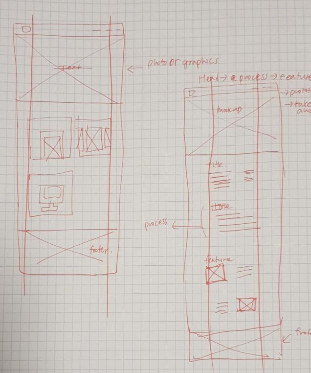

My target audience is mainly recruiters. Here is my sketches
I made changes based on the feedback that I got after project2. It influenced on my design decision too.
I changed spacing, improved visual hierarchy and consistency.
I resized(optimized) images to align properly with text, and
made sure all everything is aligned.
I used red because red represents me well. I wish my website is scannable and readable. Roboto increases scannability and readability, so I chose Roboto.

Font information:
Roboto(Google font), Roboto Condensed(Google font)
Navigation bar information:
https://www.w3schools.com/howto/tryit.asp?filename=tryhow_css_dropdown_navbar
Jquery resource:
https://codepen.io/HZaccaro/pen/zvrgLbr